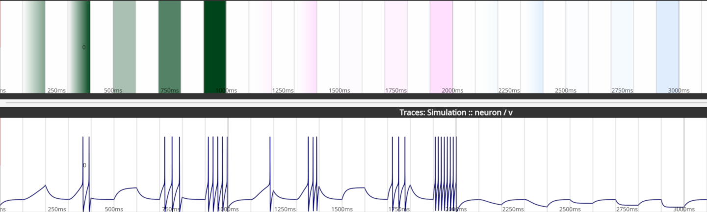

Examples
Open examples with File → Open example project (each opens in a new tab).
Edit their parameters and initial conditions in File → Edit Model
(Ctrl+E).
One input protocol, three substrates
| Substrate | Run the input array | Read out |
|---|---|---|
| Digital | Simulate → Run Simulation (Brian2) or an external simulator | traces, spikes and synapses appear in the panels |
| Biological | Export → Optogenetic Input or the SysCon2 (HOLO4D) tab of the Stimulation setup (holographic stimulation) | ScanImage acquisition, imaging import or patch clamp |
| Neuromorphic | BrainScaleS-2 tab of the Stimulation setup (BrainScaleS-2) | spikes and membrane traces read back |
For biological targets, map input rows to real cells with Cellpose segmentation (File → Cell segmentation) first.
Example projects
| Menu section | Example | Contents |
|---|---|---|
| Basics | Getting Started Project | 10 HH neurons (8 exc, 2 inh) with a 2-photon FOV and mapped Cellpose cells (Quickstart) |
| Basics | non_linear | two input neurons driving one neuron through non-linear synapses |
| Single Neuron | Hodgkin-Huxley Neuron | patch clamp and optogenetics protocol (below) |
| Single Neuron | Adaptive Exponential Integrate-and-Fire Neuron | regular-spiking AdEx (Brette and Gerstner 2005) with a current step |
| Single Neuron | Leaky-Integrate-and-Fire Neuron | LIF with I_external (pA) and opsin inputs in mW/mm² |
| Network | Network of Hodgkin-Huxley Neurons | Brian2 COBAHH: 4000 neurons (80% exc), random 2% connectivity |
| Network | Network of Hodgkin-Huxley Neurons with Predefined Synapses | same network, sparse (0.01%) fixed-weight connectivity |
| Network | Network of Hodgkin-Huxley Neurons with STDP | two neurons (exc → inh) with a plastic synapse potentiated by pre-before-post pairing |
| Network | Two Hodgkin-Huxley Neurons with STDP | two excitatory neurons with an STDP pairing protocol |
| Network | Locally Connected Network | 60-neuron 1-D network with Gaussian local excitation and surround inhibition |
| Network | ELISE Sequence Learning Network | ELiSe sequence learning; needs the separate elise package |
| Network | Sinus Offset External Simulator | five sine-wave units through the external simulator interface |
| Network | PyNN AdEx Neuromorphic Network | AdEx network via PyNN (needs pip install pyNN); can target BrainScaleS-2 |
| Optogenetics | ChR2 in HEK293 | 10 cells with the PyRho 6-state ChR2 model |
Hodgkin-Huxley Neuron

Models a whole-cell patch clamp recording of one neuron without synaptic input (e.g. under synaptic blockers). Input arrays:
I_external(pA, positive or negative): 100 ms ramps to ~300 and ~600 pA, then 100 ms steps of 200, 400 and 600 pA.Exc_stimulation,Inh_stimulation(fraction of the maximum opsin conductance): two 100 ms ramps (to ~50% and ~100%) and steps of 25, 50 and 100%.
Opsins are ideal conductances with instant on/off: \(E_{exc} = 0\) mV, \(E_{inh} = -80\) mV, \(g_{exc} = g_{inh} = 0.1\ mS\,cm^{-2}\). There is no noise input. Raising the neuron count adds independent copies. Setting the Na and K conductances to zero models a non-neuronal cell.